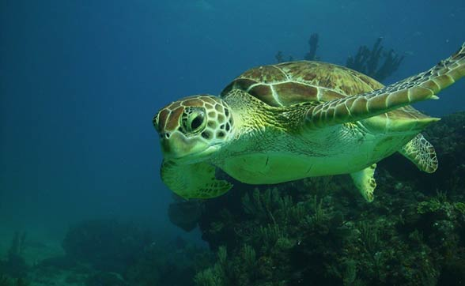
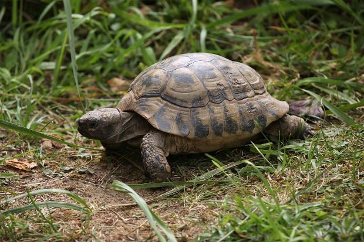
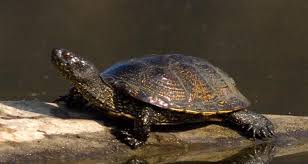
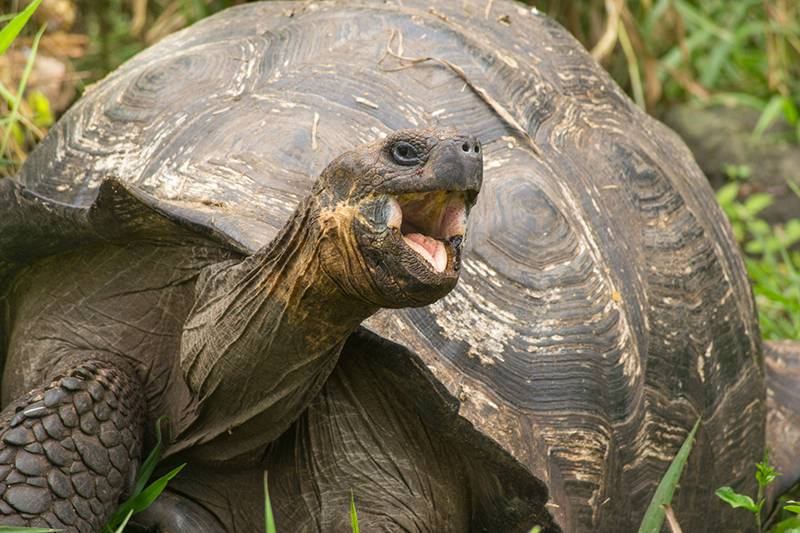
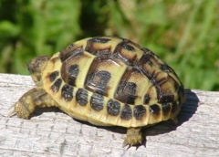

Żółwie Świata

Żółw Zielony. Gatunek gada z rodziny żółwi morskich. Nazwa żółw zielony pochodzi od koloru ich tkanki tłuszczowej. Często spotyka się go na pełnym morzu w stadach. Pokarm: Głównie roślinny: trawa morska i glony. Występowanie: Wszystkie ciepłe morza i oceany strefy równikowej.
Żółw Lądowy. Rodzina żółwi z grupy skrytoszyjnych. Należy do niej około 40 gatunków zwierząt ciepłolubnych, preferujących tereny suche typu sawannowego i pustynie. Ich wspólną cechą są grube, słupowate kończyny o zrośniętych palcach zakończone pazurami. Karapaks większości tych żółwi jest skostniały i wysoko wysklepiony. Z powodu ciężkiego pancerza nie mogą się szybko poruszać. Żywią się przede wszystkim różnymi roślinami, w tym kwiatami, soczystymi owocami, a nawet kaktusami. Zjadają też drobne zwierzęta jak dżdżownice, ślimaki, owady, czasem padlinę. Strefa ciepła i umiarkowana wszystkich kontynentów oprócz Australii i Nowej Gwinei.


Żółw Błotny jest barwy oliwkowobrązowej, jest średnio wypukły, pokrywają go gładkie, regularne rogowe tarcze. Na każdej większej tarczy rozchodzą się promieniście od jednego punktu żółte kreski. Plastron pokryty dużymi nieregularnymi jasnymi plamami jest dobrze wykształcony, u samców środkowa część nieco wklęsła. Głowa, szyja i odnóża pokryte licznymi małymi żółtymi plamkami. Zdarzają się okazy czarne i bezplamiste. Źrenice oczu są okrągłe. Samce mają z reguły tęczówkę rudopomarańczową lub brązową, a samice mają oczy upstrzone żółtymi plamkami z niekiedy całkiem żółtą tęczówką. Palce spina błona pławna. Szczególnie u samców długie i ostre pazury.
Żółw Słoniowy gatunek jednego z największych żółwi na świecie. Podobny rozmiarem do żółwi olbrzymich z wysp Oceanu Indyjskiego. Jego pancerz grzbietowy może mieć 150 cm długości, a największy znaleziony osobnik mierzył 1,87 metra i ważył ponad 400 kg. Na ogół za duże uważa się osobniki, których waga przekracza 200 kg, a wysokość dochodzi do 1 metra. Samce są zwykle większe od samic. Liczba jego podgatunków jest niepewna - wyróżnia się ich do 15, z czego 5 jest już wymarłych; nie jest pewne, czy podgatunki te nie stanowią w istocie odrębnych gatunków. Żółwie słoniowe żyją na wyspach Galapagos.
Żółw słoniowy obok zięby Darwina stanowił dla autora teorii ewolucji Karola Darwina główny dowód zróżnicowania form zwierzęcych pochodzących od wspólnego przodka zajmujących odmienne biotopy lub odmienne wyspy. W 1835 roku przebywał on krótko na Galapagos i zauważył, że żółwie z poszczególnych wysp wyewoluowały w odmienne podgatunki pod wpływem różnych warunków środowiskowych. W stosunku do reszty ciała ich karapaks jest bardzo duży. Wypukły, spadzisty karapaks jest z zewnątrz pokryty dużymi i gładkimi rogowymi tarczkami, od przodu wysoko uniesiony opada stromo ku tyłowi. Natomiast brak jest tarczki karkowej. Głowa mała osadzona na długiej szyi osłoniętej miękką skórą. Grube słupowate nogi pokrywają duże tarczki, a palce zakończone są potężnymi pazurami. Podobnie jak inne żółwie nie mają zębów, a ich rolę spełniają ostre listwy rogowe, za pomocą których tną i miażdżą zjadaną roślinność.
Całe ciało jest jednolicie brunatne lub czarnawe. Karapaks niektórych osobników nad głową zakrzywia się w górę umożliwiając żółwiowi dosięganie wyższych roślin.


Karapaks mocno wypukły, plastron płaski o bokach wygiętych ku górze. Samce mają tylną część nieco wklęsłą. Głowa masywna częściowo pokryta regularnymi tarczkami. Szczęki tworzą dziób. Szyja długa pokryta miękką skórą. Przednie kończyny trochę spłaszczone, a tylne słupkowate. Nogi zakończone 5 prostymi pazurami. Zdarzają się osobniki ze zredukowanymi palcami tylnych kończyn do 3. Ogon krótki, gruby mocno zwężony na końcu zakończony twardym kolcem. Karapaks ma barwę jasnożółtą, jasnobrązową lub oliwkowobrązową. Na środku każdej tarczy widnieje ciemnobrązowa lub czarna plama. Ciało ma barwę szarą lub jasnooliwkową bez plam. Żółw grecki jest roślinożerny. Jedynie przypadkowo może zjeść np. małego bezkręgowca wraz z roślinami. Dieta tego gada powinna być maksymalnie zbliżona do sposobu odżywiania w naturze, czyli powinna być obfita w błonnik i wapń, zaś uboga w białko, cukier i tłuszcze. W domowej hodowli zjada większość roślin łąkowych, jako sporadyczny dodatek można podawać utartą na tarce marchew. Nie powinno się podawać owoców i warzyw, są zbyt kaloryczne, często moczopędne, a niektóre z nich typu sałata, szpinak, rabarbar, kapusta – zawierają groźne dla zdrowia żółwia szczawiany, doprowadzające do odwapnienia kości i krzywicy oraz kamicy nerkowej. Owoce, z uwagi na zawartość cukru mogą być przyczyną namnażania się pasożytów w przewodzie pokarmowym. Zimą podstawę diety powinny stanowić wszelkie susze (suszone rośliny łąkowe, siano, itd.).